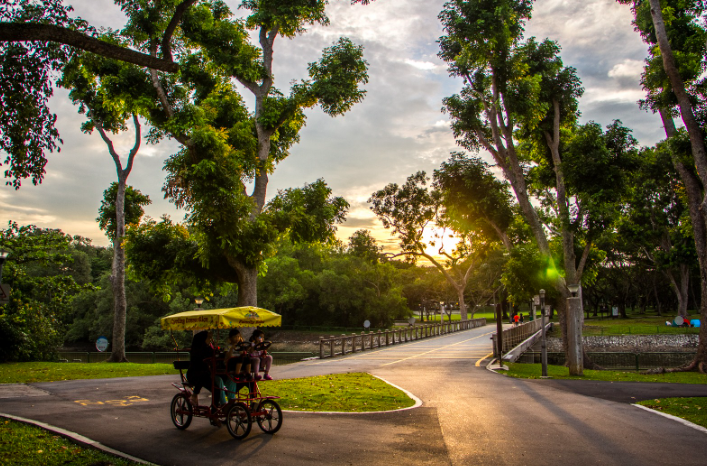
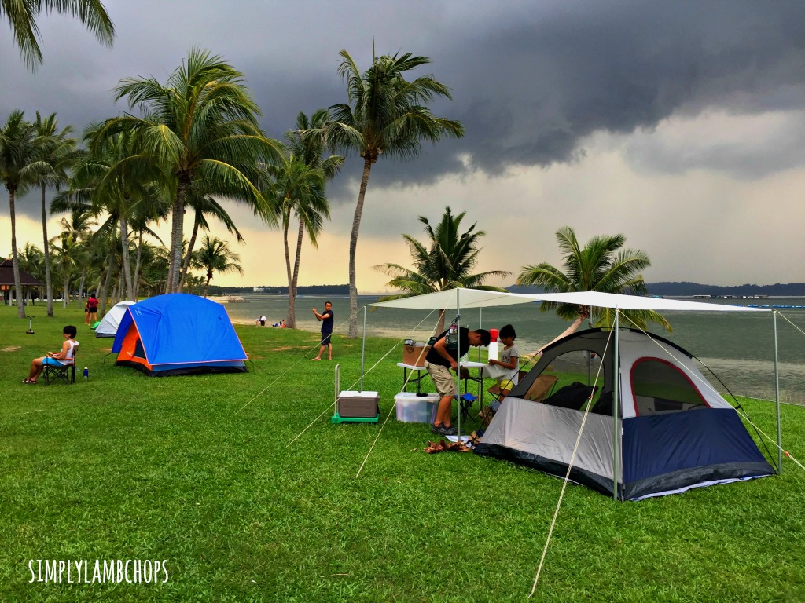
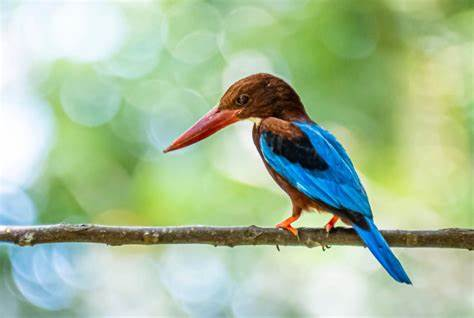
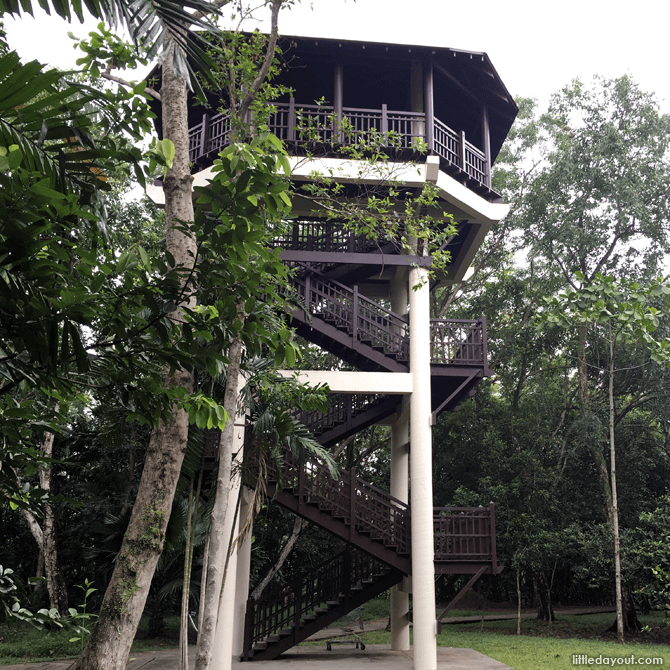
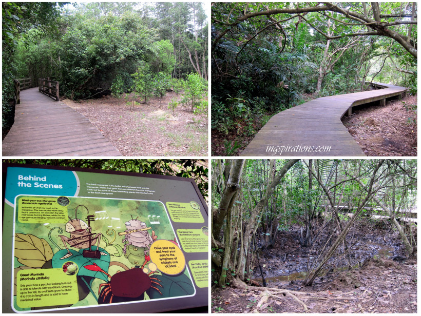

A haven filled with fun and discoveries!
Spend the day in Pasir Ris Park: Things to do and more!
Pasir Ris Park is a tranquil park charming that offers modern amenities for cycling and inline skating, as well as barbecue pits for rental.
Not many know that tucked away in the park is a mangrove forest, kitchen garden and butterfly garden - all within close proximity of each other.
These three attractions create an excellent educational walking trail for nature lovers and families out for some fun in the sun.
Bird enthusiasts can also observe birds from the three-storey bird-watching tower located within the mangrove forest.
If you are hankering for more after completing the educational trail, the rest of the park also has much to offer.
A large playground - with giant space-net and interesting play stations - will keep the kids occuppied for hours.
You can also go jogging or cycling on the tracks while enjoying the seabreeze.
End your day at Pasir Ris Park with a meal by the beachfront at any of the restaurants there.
Cycle and Skate
To explore the hidden beauty of the Pasir Ris Park, you should conisde cycling and skating here. Apart from various types od exercises, cycling and skating help you to exlpore the flora and fauna of this park to the greater extent possible. You may also watch the wildlife in its natural habitat here.
Camping
Pasir Ris Park is definitely a wonderland for camping purpose in Singapore. You can go for overnight camping here which is allowed inside the park. To do so, you must have prior permission from the authorities.
For more , click here.Go Birdwatching
  Pasir Ris Park is home to over 300 species of birds in Singapore. Therefore, bird lovers from across the world visit this park to
find an opportunity to see such birds in their natural habitat. If you are a bird lover, then grab your binoculars, camera and hat and
head towards this park. You will see a number of rare birds, including a bright yellow black-naped oriole and larger birds of prey here.
There is a three-storey high bird watching tower here, located within the mangrove forests.
Visit the Mangrove Boardwalk
Mangrove boardwalk at Pasir Ris Park is a perfect walk for those who wish to comb through the carefully preserved and lush green six-hectare mangrove forests. During the stroll, you might encounter mudcrabs, mudskippers and water monitors.

Gallop Stables is founded in Pasir Ris Park. It offers the best opportunity to the visitors wanting to go horseback riding without becoming a member of riding club. It gives you unlimited pleasure of riding a horse in the lush green forests. It started its jouney in 2003 at Pasir Ris Park with 13 friendly ponies. The Gallop Stable has started offering low-cost riding experience for all. It has become an easier way for the visitors to be close to the horses and ponies.
Gallop Stables
Opening Hours:
10am - 7pm (Mon - Thu) / 10am - 10pm (Fri - Sun)
If exploring Pasir Ris Park got you working up an appetite, take a break at Rasa Istimewa Restaurant, located within the park itself. This Halal restaurant prides itself for its mouth-watering local dishes including chilli crab, nonya fishhead and barbecue seafood at reasonable prices. It also features an indoor and outdoor dining area, so you can savour the flavour while soaking up nature's beauty.
Rasa Istimewa Restaurant @ Pasir Ris
Opening Hours:
12noon - 11pm (Sun - Fri) / 12noon - midnight (Sat)